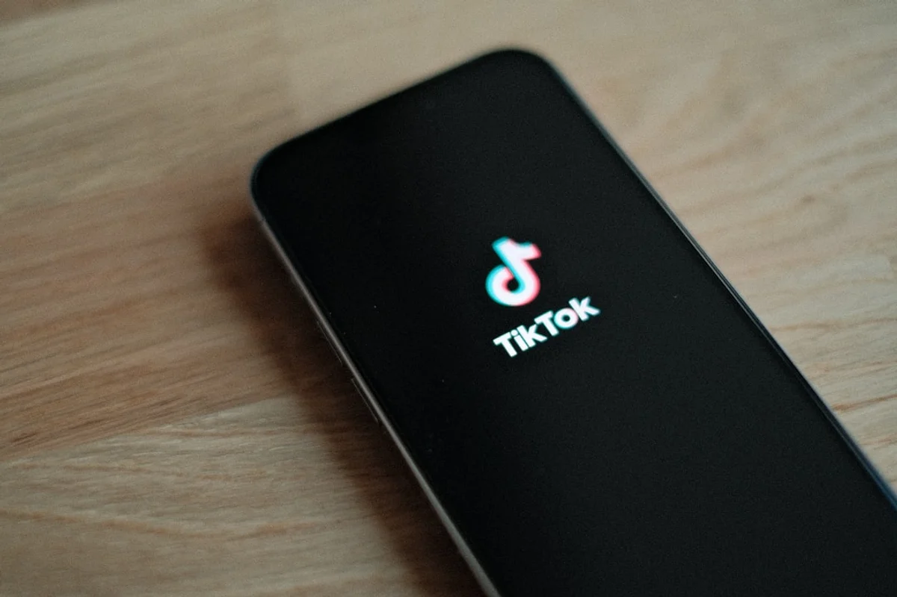

Introduction
The TikTok Creator Rewards Program 2026 is no longer the modest side-income experiment it once was. Following a wave of algorithm overhauls announced in early 2026 and a flurry of creator testimonials going viral across the platform itself, independent creators are asking the same urgent question: is TikTok finally worth building a real business around?
The short answer is that the stakes are genuinely higher than they were twelve months ago. TikTok has retired the old Creator Fund entirely, replacing it with a multi-layered monetisation structure that rewards watch behaviour, search intent, and audience loyalty in ways the previous system simply ignored. For travel writers, food bloggers, culture journalists and anyone producing content in a specific niche, this is a meaningful shift.
This piece breaks down exactly how the new programme works, what the algorithm is actually measuring in 2026, and why the creators who understand the mechanics behind the payouts are earning significantly more than those who simply post and hope. No fluff, no recycled tips: just the mechanics, the numbers, and the angles most creators are missing.
What Happened to the Old TikTok Creator Fund
The original TikTok Creator Fund, launched in 2020, was widely criticised for one fundamental flaw: the more creators joined, the less each individual earned. The pool was fixed, so growth in the creator community directly diluted everyone's income. By 2023, credible reports from mid-size creators (those with 100,000 to 500,000 followers) showed average earnings of $0.02 to $0.04 per 1,000 views, a figure so low it became something of a running joke.
TikTok quietly began phasing the Creator Fund out across major markets through 2024 and 2025, replacing it first with the Creator Rewards Program as a beta for creators with over 100,000 followers, then progressively widening eligibility. By January 2026, the transition was effectively complete in the United States, United Kingdom, Germany, France, Japan, Brazil and several other priority markets.
The structural difference is important. The Creator Rewards Program is not a shared pool. Payments are calculated individually per video using a multi-factor formula, which means one creator's success does not mathematically reduce another's. This is the foundational change that makes the 2026 programme worth taking seriously.
How the Multi-Factor Rewards Formula Actually Works
TikTok has not published the full weighting of its 2026 reward formula, but enough creator data and platform documentation has emerged to sketch a reliable picture. The payment per video is calculated across at least four distinct signals.
1. Qualified Views (not raw views) A view only counts as a qualified view if the viewer watches for a minimum threshold, understood to be around 5 seconds for videos under 60 seconds and proportionally longer for extended content. Raw view counts are irrelevant to earnings.
2. Audience Retention and Completion Rate Videos hitting a 70 percent or higher completion rate receive a significantly boosted multiplier. A 90-second video where most viewers watch 63 seconds or more is rewarded far more generously than a 30-second clip that loses half its audience at the 10-second mark. This is not a minor adjustment: creator data shared in open forums suggests the multiplier difference between a 40 percent completion video and a 75 percent completion video can be 2x or more on the per-view payout.
3. Search Intent Traffic This is the most underreported factor in the 2026 update. Views that arrive via TikTok Search rather than the For You Page carry a premium. According to data circulating among mid-size creators and cross-referenced with TikTok's own support documentation, search-driven views pay approximately 20 to 30 percent more than standard For You Page views. The logic is that search intent signals higher content quality and topic specificity, which TikTok treats as more valuable advertising real estate.
4. Originality Score TikTok's algorithm now applies an originality assessment to each video before calculating rewards. Content flagged as derivative, overly stitched, or closely mimicking trending audio without original value is down-weighted. This was introduced specifically to disincentivise the low-effort reaction and duet farms that had gamed earlier versions of the system.
The practical implication: a niche travel video explaining how to find a specific local market in Barcelona, optimised for TikTok Search, with strong pacing that holds viewers through to the final frame, will outperform a generic trending-audio reel in the same account by a considerable margin on a per-view basis.

Eligibility Requirements in 2026: Who Can Join
As of early 2026, the Creator Rewards Program requires creators to meet the following baseline criteria to apply:
- Minimum 10,000 followers (reduced from the original 100,000 beta threshold)
- At least 100,000 video views in the last 30 days
- Account age of at least 30 days
- Content posted from an eligible country (the list now includes over 60 markets)
- Account in good standing with no recent Community Guidelines violations
- Creator must be 18 years or older
The reduction of the follower threshold to 10,000 is a significant policy shift and represents TikTok's explicit acknowledgement that micro and mid-tier creators were being excluded from meaningful monetisation. A food blogger documenting regional Spanish cuisine or a travel creator covering offbeat European itineraries can now qualify without needing a mass-market following.
It is worth noting that eligibility is evaluated on a rolling basis. An account that temporarily falls below the 100,000 monthly view requirement may be paused from the programme until the threshold is met again in the following 30-day window.
What Creators Are Actually Earning: Real Numbers for 2026
Actual earnings vary considerably by niche, content format, audience geography, and the four formula factors described above. However, aggregated data from creator communities including r/TikTokHelp and several creator-focused Discord servers suggests the following rough benchmarks for the 2026 programme:
- Low-performing video (under 40% completion, For You Page only): $0.04 to $0.06 per 1,000 qualified views
- Average video (50 to 65% completion, mixed traffic): $0.12 to $0.25 per 1,000 qualified views
- High-performing video (75%+ completion, strong search traffic): $0.40 to $0.80 per 1,000 qualified views
- Exceptional video (search-optimised, high retention, niche topic): Reported cases of $1.00 to $1.20 per 1,000 qualified views
For context, the old Creator Fund rarely exceeded $0.05 per 1,000 views even for top performers. The ceiling has moved substantially upward, though it remains conditional on producing content that holds an audience and attracts search traffic.
A creator posting three videos per week in a focused niche, each reaching 200,000 views with strong completion rates, could realistically earn between $500 and $1,500 per month from the programme alone, before any brand partnership, affiliate or merchandise income. That is a meaningful income layer, particularly for creators based in lower cost-of-living markets or using TikTok as one channel in a broader content strategy.

The Search Optimisation Angle Most Creators Are Missing
Here is the angle that is not being discussed loudly enough: TikTok in 2026 is functioning as a search engine for a substantial portion of its users, particularly those aged 18 to 35 who are using it to research restaurants, destinations, products, and cultural recommendations. TikTok's own data has repeatedly shown that search usage on the platform has grown by triple digits year over year since 2022.
The Creator Rewards Programme now financially rewards content that captures this search behaviour, because search traffic is more predictable, more topic-specific, and more valuable to advertisers. This means that a creator who structures their videos around specific, searchable questions (rather than chasing trending sounds) earns more per view over a longer period.
The practical approach is straightforward but counterintuitive to creators trained on viral-first thinking:
- Identify specific questions people are already searching for on TikTok using the platform's search autocomplete and the dedicated TikTok Search Insights tool available in the Creator Centre.
- Script the video so the searchable phrase appears in the first five seconds of spoken audio and on-screen text, because TikTok's algorithm reads both.
- Use the video description to include the natural language version of the question, not just hashtags.
- Build toward a genuine answer or resolution so completion rates stay high. Search users are seeking information, not entertainment, so retention holds better when the content actually delivers.
For a creator in the food and travel space, this might mean producing a video titled and scripted around "best pintxos bars in San Sebastián under 20 euros" rather than jumping on a trending audio clip about food. The former will earn search-premium payouts over months. The latter will spike and vanish within 72 hours.
This is the compounding logic that separates creators treating TikTok as a slot machine from those building it as a durable content asset.
The Full 2026 Monetisation Stack Beyond Creator Rewards
The Creator Rewards Programme is one layer of a broader monetisation architecture TikTok has assembled. Understanding the full stack matters because the programmes interact and, in some cases, compete for the same viewer attention.
TikTok One is the platform's creator marketplace, connecting brands directly with creators for paid campaigns. Unlike organic Creator Rewards income, TikTok One deals are negotiated fees and do not depend on view counts or algorithm performance. For creators with established niches and engaged audiences, this can be the highest-earning channel by far.
Series allows creators to sell premium video collections behind a paywall, with prices ranging from $0.99 to $189.99 per series. This suits educational creators, travel guides, or anyone producing genuinely exclusive content that a segment of their audience would pay for.
Video Gifts and LIVE Gifts enable viewers to send virtual gifts during videos or live sessions, which convert to real currency. LIVE Gifts in particular have become a significant income source for creators in certain communities, though they require active audience management and consistent scheduling.
TikTok Shop and its affiliate commission structure remain a major income avenue, particularly for creators in food, fashion, beauty and home categories. Commission rates on TikTok Shop affiliate sales typically range from 5 to 20 percent depending on the product category and seller agreement.
The most financially resilient creators in 2026 are those treating these as complementary streams: Creator Rewards providing a steady baseline, TikTok One delivering larger irregular spikes, Series providing passive income on evergreen content, and LIVE Gifts rewarding community investment.
Independent Creators vs. Large Agencies: Who the 2026 System Favours
One of the genuinely interesting dynamics of the 2026 Creator Rewards changes is that the algorithmic formula does not inherently favour volume producers or agency-managed accounts over independent creators. In fact, in several measurable ways, the system structurally advantages independent niche creators.
Large content agencies managing dozens of TikTok accounts tend to optimise for reach and trend alignment, producing content that performs well in the For You Page but rarely generates strong search intent traffic. Independent creators in specific niches, by contrast, build the kind of topic authority that causes TikTok's search algorithm to consistently surface their videos for relevant queries.
Furthermore, the originality score component penalises the templated, trend-chasing content that agencies often produce at scale. A single video by an independent food creator who films themselves inside a specific market in Valencia, talks authentically about a dish that most tourists have never heard of, and structures the video around a specific searchable question, can outperform an agency-produced glossy travel reel on a per-view earnings basis.
This is not to say that large followings or polished production are disadvantages. They are not. But the 2026 system is specifically designed so that quality of attention and specificity of topic are rewarded at the payment level, which levels the playing field more than any version of TikTok monetisation has before.
Final Thoughts
The TikTok Creator Rewards Program 2026 represents a genuine structural shift in how the platform values independent content, and the creators who understand the mechanics are in a meaningfully better position than those still producing content by instinct alone. The combination of search-premium payouts, completion rate multipliers, and a broader monetisation stack means that niche expertise is, for the first time on TikTok, financially rewarded in a way that is proportional to its actual value.
For creators in travel, food, and culture, the opportunity is particularly well-timed. These are precisely the categories where search intent is high, specificity is possible, and audience retention tends to be strong because viewers are genuinely seeking recommendations rather than passive entertainment.
The old playbook of chasing trends and riding viral audio is not dead, but it is no longer the highest-earning strategy available. The creators who will look back on 2026 as the year things changed will be those who started treating TikTok as a search and discovery platform, not just a social one.
If this breakdown helped clarify how the programme actually works, consider sharing it with a fellow creator who is still trying to figure out why the numbers have shifted.
Frequently Asked Questions
How much does TikTok Creator Rewards Program pay per 1000 views in 2026?
Earnings vary significantly based on content performance. In 2026, creators with average completion rates and mixed traffic sources typically earn between $0.12 and $0.25 per 1,000 qualified views. High-performing videos with 75 percent or higher completion rates and strong search-driven traffic can reach $0.40 to $0.80 per 1,000 views. Exceptional cases in niche, search-optimised content have reported rates above $1.00 per 1,000 qualified views, a major improvement over the old Creator Fund which rarely exceeded $0.05.
What are the eligibility requirements for the TikTok Creator Rewards Program in 2026?
As of 2026, creators need a minimum of 10,000 followers (reduced from the earlier 100,000 beta threshold), at least 100,000 video views in the preceding 30 days, an account that is at least 30 days old, and must be based in one of the 60-plus eligible countries. The account must be in good standing with no recent Community Guidelines violations, and the creator must be 18 years or older.
Does TikTok pay more for search views than For You Page views?
Yes. In the 2026 Creator Rewards formula, views generated through TikTok Search carry a premium compared to standard For You Page distribution. The differential is estimated at 20 to 30 percent more per qualified view for search-driven traffic. This is because search intent signals higher content specificity and more valuable advertising context for TikTok.
What replaced the TikTok Creator Fund?
The TikTok Creator Fund was replaced by the Creator Rewards Program, which was rolled out progressively through 2024 and 2025 and became the primary monetisation programme across major markets by January 2026. Unlike the Creator Fund, which used a fixed shared pool, the Creator Rewards Program calculates payments individually per video based on qualified views, completion rate, search traffic, and an originality assessment. This means one creator's earnings do not reduce another's.
Can small creators join the TikTok Creator Rewards Program in 2026?
Yes. The 2026 eligibility threshold was lowered to 10,000 followers, making the programme accessible to micro and mid-tier creators for the first time. Creators still need to meet the 100,000 views in 30 days requirement, but the significant reduction in the follower threshold means that niche creators with engaged, loyal audiences can qualify without needing a mass following.
What is the TikTok Originality Score and how does it affect earnings?
The Originality Score is a component of TikTok's 2026 reward formula that assesses how original and independently valuable each video is. Content flagged as derivative, heavily stitched from others' work, or closely mimicking trending audio without adding original perspective receives a lower score, which reduces the per-view payout multiplier. The score is designed to disincentivise low-effort content farms and reward creators producing genuinely novel material.